Um contador de quantos visitantes tivemos durante todo o Rec'n'Play.
Será desenvolvido um circuito com arduino e alguns sensores que farão a identificação e contagem do quantitativo de pessoas que passarem por nossa apresentação. Esse circuito estará associado a um programa que transformará esses dados crus em uma resposta visual e atrativa ao público (aplicação web).
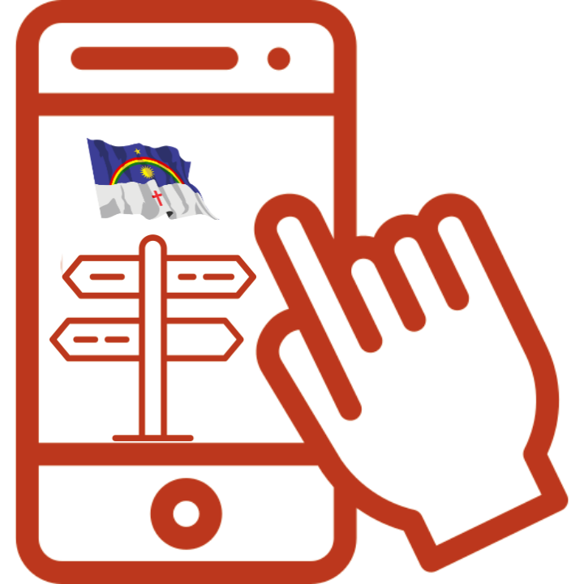
Cultural App
Aplicativo informativo onde demonstraram pontos turísticos, festas e comidas típicas do estado.
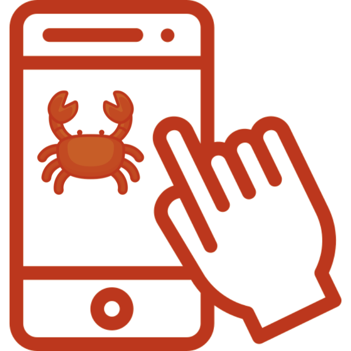
Jogo Stronguejo
O jogo se passa na cidade do Recife.
Os tubarões estão invadindo a cidade, e uma onda enorme será forma por um grupo de tubarões, fazendo a cidade ficar inundada. Lá no cantinho escondido, o herói (caranguejo) estará observando de longe toda movimentação, esperando o momento certo
para agir e defender sua cidade.
Music Box
Uma "caixinha de música" que contará a história do movimento Mangue Beat e suas músicas.
Será desenvolvido uma aplicação web com uma lista de músicas associadas e criadas pelo movimento Mangue Beat, que, quando selecionadas para reprodução, mostrará na tela um pouco da história da música, do movimento, da cidade do Recife e de Pernambuco.
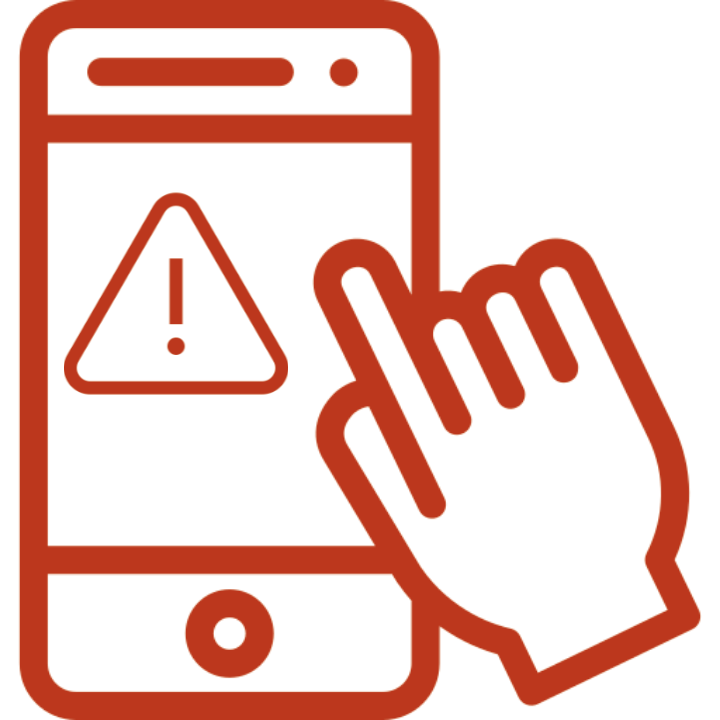
New Report
O APP tem a função de servir como um report de prevenção de possíveis acidentes.
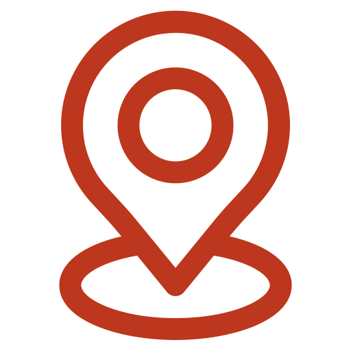
Show me
Geolocalização no evento Senac Casa Zero & Casa Cor - Rec n’Play. Aplicativo que mostra ao usuário, em tempo real, sua localização no evento, proximidade de
expositores,mostras,palestras,áreas de alimentação, oficinas, desfile de moda, rodadas de negócios, entre outros, além de indicar a melhor rota até o local desejado.
Aparece no mapa a localização da Casa Zero & Casa Cor no Recife Antigo, e ao clicar aparece a agenda/lista do evento Senac nesse local.No caso da Casa Cor, aparece o desfile dia 18/11 às 18h.
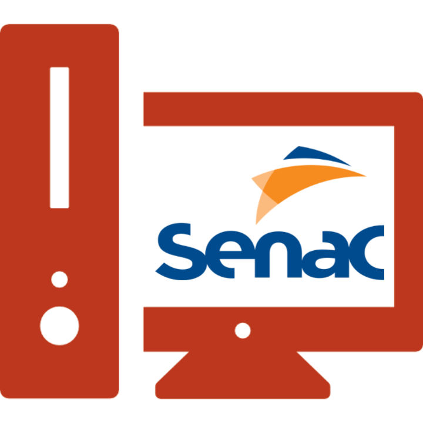
Site Geral
Desenvolvimento de um site geral para alocação dos projetos, conexão com os cursos e horário das oficinas.
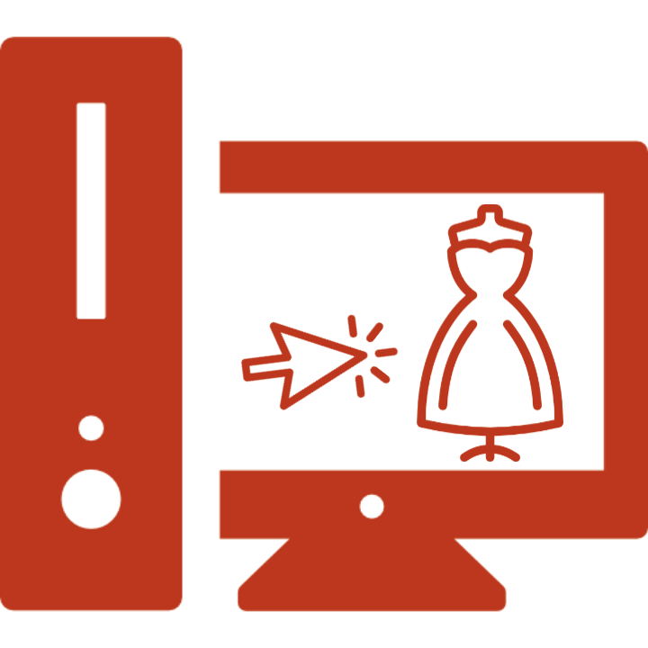
Touch Skin
Site com manequim digital para interação com o público
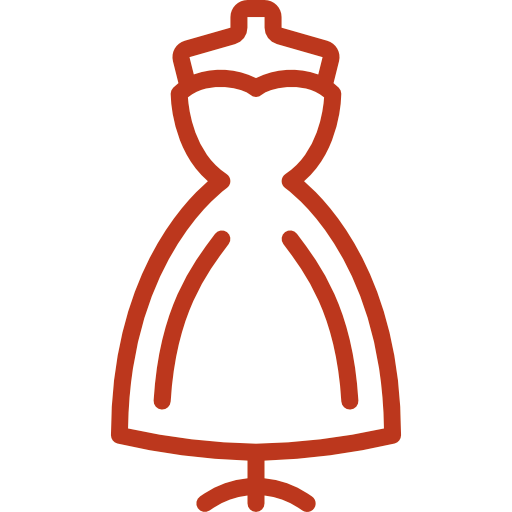
Desfile de Moda
Passarela de entrada - Casa Cor PE
Desfile técnológico/ MAKER com interefência de LEDS e placa Arduíno, programados
para efeito visual de ligar e desligar os leds, de acordo com a batida da música que
comporá o desfile.
Quarta-Feira - Dia 16/17
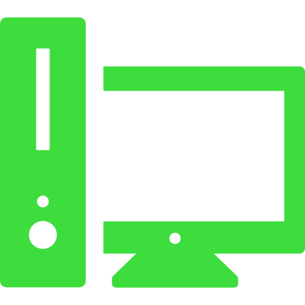
Oficina | Computação Desplugada para Docentes
Auditório – Urbano Vitalino e Advogados - Casa Zero
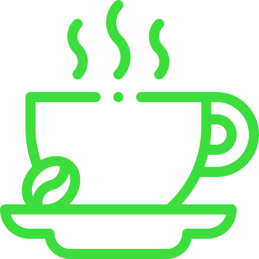
Oficina | Gosto, Aroma e Sabor do Café: Entenda as Diferenças
Espaço Gourmet Romero Duarte e Arquitetos - Casa Zero
Oficina | Computação Desplugada para Docentes
Auditório – Urbano Vitalino e Advogados - Casa Zero
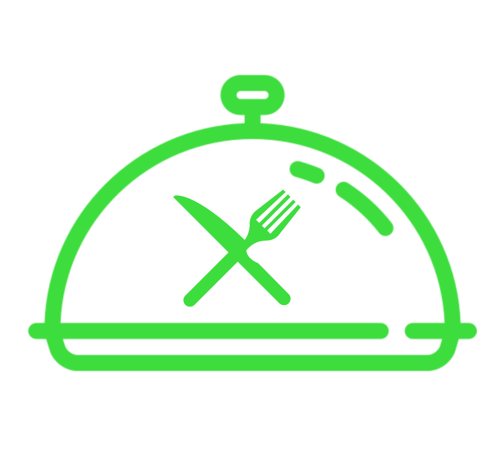
Oficina | Cesar Santos e a Cozinha da Retomada
Espaço Gourmet Romero Duarte e Arquitetos - Casa Zero
Oficina | Harmonização com Cerveja
Espaço Gourmet Romero Duarte e Arquitetos - Casa Zero
Quinta-Feira - Dia 17/11
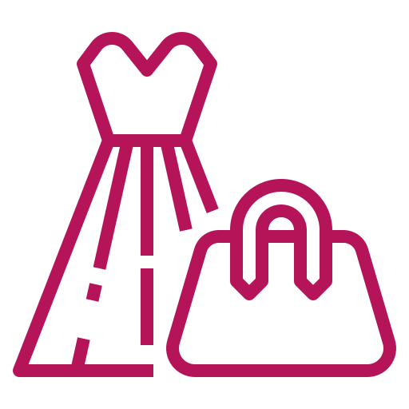
Oficina | Moda, Cultura e Tecnologia
Auditório – Urbano Vitalino e Advogados - Casa Zero
Intervenção tecnológica com a comunidade inscrita. A oficina irá levar para a
comunidade duas peças já criadas, para serem finalizardas lá na casa zero, para
comporem o desfile e a comunidade poder participar do processo de construção do
produto.
Oficina | Crie Sites Simples e Funcionais
Sala de aula Educação sem Fronteiras – Casa Zero
intuitiva a criação de um website simples e funcional. Partindo de um protótipo simples
no Figma até o desenvolvimento em HTML e CSS.
Bate-papo | As Oportunidades para os Profissionais
Brasileiros no Exterior
Térreo – Casa Zero
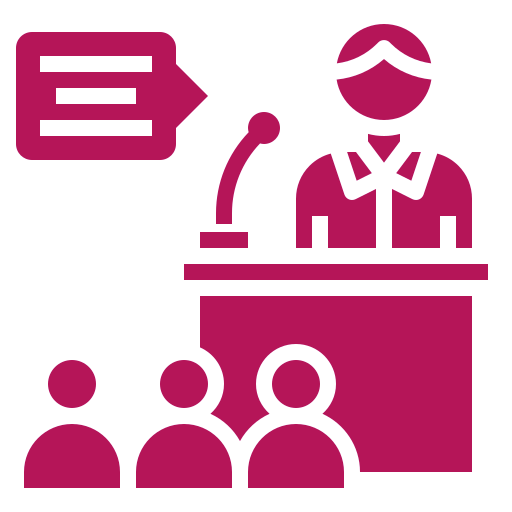
Palestra | Marketing Digital para Gastronomia
Térreo – Casa Zero
Sexta-Feira - Dia 18/11
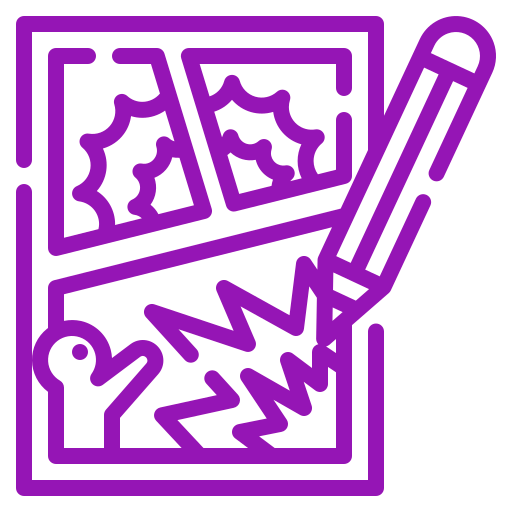
Oficina | Ilustração Digital para Histórias em Quadrinhos
Sala de aula Educação sem Fronteiras – Casa Zero
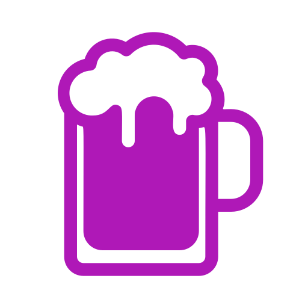
Oficina | Mixologia - Drinques
Espaço Gourmet Romero Duarte e Arquitetos - Casa Zero
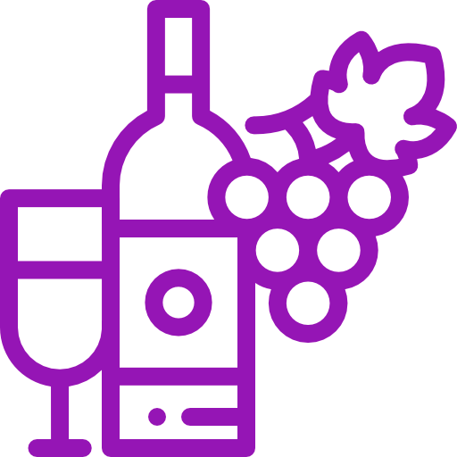
Oficina | Harmonização de Vinho Doce (Espumante e Fruta)
Espaço Gourmet Romero Duarte e Arquitetos - Casa Zero
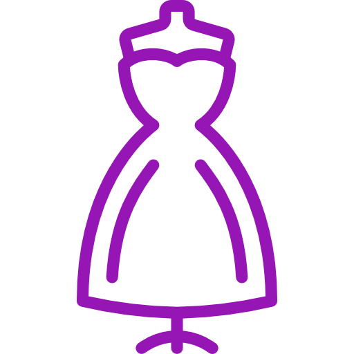
Desfile de Moda Pierre Cardin e o Movimento Manguebeat
Passarela de entrada - Casa Cor PE
Desfile técnológico/ MAKER com interefência de LEDS e placa Arduíno, programados
para efeito visual de ligar e desligar os leds, de acordo com a batida da música que
comporá o desfile.
Sábado - Dia 19/11
Oficina | Construção de Miniaplicativos com Scratch (infantil)
Sala de aula Educação sem Fronteiras – Casa Zero
Uma oficina de 3h voltada para o público infantil com o intuito de
introduzir os pequeninos no mundo da tecnologia, desenvolvendo, através de jogos e
brincadeiras, seus primeiros "programas", utilizando meios no-code.
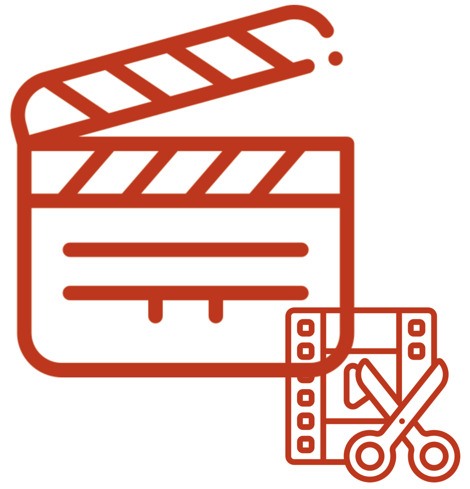
Oficina | Criação e Edição de Vídeos usando Aplicativo Mobile com Ênfase em Negócios Digitais
Térreo – Casa Zero
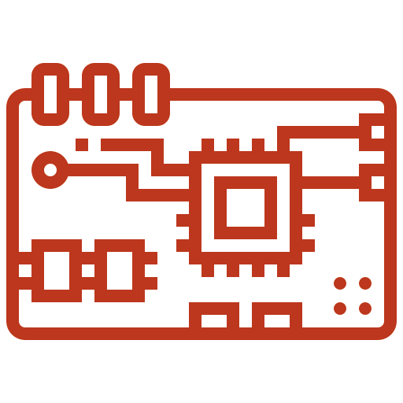
Oficina | Programando em Arduino
Sala de aula Educação sem Fronteiras – Casa Zero
Uma oficina de 3 a 4h que se propõe a apresentar ao público a
eletrônica e algumas de suas aplicações, além do desenvolvimento prático de um
projeto simples utilizando kits de arduino.
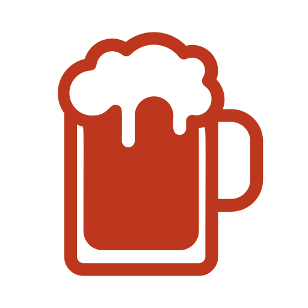
Oficina | Harmonização com Cerveja Artesanal
Espaço Gourmet Romero Duarte e Arquitetos - Casa Zero
Bate-papo | Estude no Exterior: Conheça as Opções de Intercâmbio
Auditório – Urbano Vitalino e Advogados - Casa Zero
Oficina | Mixologia - Drinques
Espaço Gourmet Romero Duarte e Arquitetos - Casa Zero